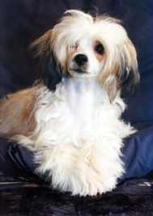

<table border="0" class="layout">
    <colgroup span="1" style="text-align: left;"><col width="25%" span="1" style="text-align: left;"></col><col width="75%" span="1" style="text-align: left;"></col></colgroup> 
    <tbody style="text-align: left;">
        <tr style="text-align: left;">
            <td valign="top" style="text-align: left;">
                <div class="holster">
                    <div class="block_container s3 b-text b-static-text user_css_128160066548" id="e_127779722641"></div>
                    <div class="block_container s3 b-image txt-center" id="e_1282719827378"></div>
                    <div class="block_container s3 b-image txt-center"></div>
                    <div class="block_container s3 b-image txt-center" style="text-align: center;">Наши заводчики:</div>
                    <div class="block_container s3 b-image txt-center" style="text-align: center;"></div>
                    <div class="block_container s3 b-image txt-center" style="text-align: center;"><strong>Сашилина Людмила - </strong></div>
                    <div class="block_container s3 b-image txt-center" style="text-align: center;"><span style="font-size: 8pt;">добро пожаловать к нам:</span></div>
                    <div class="block_container s3 b-image txt-center" style="text-align: center;"><a href="http://komondors.narod.ru/"><strong>"От Ляли Белой"</strong></a></div>
                    <div class="block_container s3 b-image txt-center" style="text-align: center;"><strong><br /></strong></div>
                    <div class="block_container s3 b-image txt-center" style="text-align: center;"><strong>Гусарова Юлия - </strong></div>
                    <div class="block_container s3 b-image txt-center" style="text-align: center;"><span style="font-size: 8pt;">добро пожаловать к нам:</span></div>
                    <div class="block_container s3 b-image txt-center" style="text-align: center;"><a href="http://milisenta32.narod.ru/"><strong>"Милисента"</strong></a></div>
                    <div class="block_container s3 b-image txt-center" style="text-align: center;"></div>
                    <div class="block_container s3 b-image txt-center" style="text-align: center;"></div>
                    <div class="block_container s3 b-image txt-center" style="text-align: center;"></div>
                    <div class="block_container s3 b-image txt-center" style="text-align: center;"></div>
                    <div class="block_container s3 b-image txt-center" style="text-align: center;"></div>
                    <div class="block_container s3 b-image txt-center" style="text-align: center;"></div>
                    <div class="block_container s3 b-image txt-center" style="text-align: center;">.</div>
                    <div class="block_container s3 b-image txt-center" style="text-align: center;"><strong>Арсентьева Лидия Кузьминична</strong> - тел.: 732-40-59 (есть щенки!)</div>
                </div>
            </td>
            <td style="text-align: left;">
                <div class="holster">
                    <div class="block_container s3 b-text b-static-text user_css_12816005438" id="e_128272021960">
                        <p style="text-align: center;"><span style="color: #006600;"><span style="color: #0000ff;"><strong>Китайская хохлатая собака</strong></span></span></p>
                        <p style="text-align: justify;"><span style="color: #006600;"><span style="color: #0000ff;"><strong>Из истории породы: </strong>дошедшие до наших дней записи миссионеров утверждают, что в XV веке португальский мореплаватель Васко де Гама привез домой из Мексики четырех собак ксоло, 3-х сук и одного кобеля. Диковинные для Европы собачки заинтересовали священников-миссионеров, которые увезли несколько голых щенков в Монголию, где и приступили к выведению новой породы. По ходу дела святые кинологи вели тщательные записи, благодаря которым установлено, что в процессе получения китайских хохлатых потомки ксоло скрещивались с мальтезским и тибетским терьерами, абиссинской песчаной, фараоновой собакой и бассенджи. Наконец в итоге двухсотлетних экспериментов священники получили оригинальное создание: "собака типа гончей, высотой 35 см, с русачьими лапами и миндалевидными глазами". Старания миссионеров, однако, едва не пропали даром: к 1966 году в США проживала единственная в мире хозяйка китайских хохлатых собачек. Однако порода не погибла. Китайские хохлатые были завезены из Америки в Великобританию, где группа заводчиков приняла решение заняться долгосрочными программами, направленными на улучшение этой древней породы. Китайская хохлатая является выносливой породой с хорошим здоровьем. </span></span><span style="color: #006600;"><br /><span style="color: #0000ff;"><strong>Общая характеристика:</strong> веселый нрав, уравновешенность, безграничная любовь к человеку и другие самые привлекательные черты китайских хохлатых являются наследственно обусловленными породными признаками. Это очень умные собаки. Все человеческие чувства: радость, печаль, разочарование, обида, любовь можно прочитать в их глазах. Они любознательны и активны, могут постоять как за себя, так и за своего любимого хозяина.</span></span></p>
                        <p style="text-align: justify;"><span style="color: #006600;"><span style="color: #0000ff;"><strong>Содержание и уход:</strong> это идеальная собака для квартирного содержания, ей не требуются ежедневные прогулки на улицу. Китайская хохлатая является простой для повседневного ухода собакой. </span></span><span style="color: #006600;"><br /><span style="color: #0000ff;"><strong>Размеры: </strong>рост 28-33 см (кобели), 23-30 см (суки). Вес варьирует значительно, но не должен превышать 5 кг.</span></span></p>
                        <p style="text-align: justify;"><span style="color: #0000ff;">_______________________________________________</span></p>
                        <p style="text-align: justify;"> </p>
                    </div>
                </div>
            </td>
        </tr>
    </tbody>
</table>​
